<!DOCTYPE html><html><head><title>Portfolio of Nathan Keen</title><meta charset="utf-8"><meta name="viewport" content="width=device-width, initial-scale=1, shrink-to-fit=no"><link rel="apple-touch-icon" sizes="180x180" href="/apple-touch-icon.png"><link rel="icon" type="image/png" sizes="32x32" href="/favicon-32x32.png"><link rel="icon" type="image/png" sizes="16x16" href="/favicon-16x16.png"><link rel="manifest" href="/manifest.json"><link rel="mask-icon" href="/safari-pinned-tab.svg" color="#5bbad5"><meta property="og:title" content="Nathan Keen's Portfolio"><meta property="og:image" content="images/logo-NK-1xxhdpi.png"><meta property="og:description" content="UX/UI web designer"><meta property="og:url" content="www.nathankeen.id.au"><meta name="theme-color" content="#ffffff"><link rel="stylesheet" href="https://maxcdn.bootstrapcdn.com/bootstrap/4.0.0-beta.2/css/bootstrap.min.css" integrity="sha384-PsH8R72JQ3SOdhVi3uxftmaW6Vc51MKb0q5P2rRUpPvrszuE4W1povHYgTpBfshb" crossorigin="anonymous"><link rel="stylesheet" href="css/fontawesome.css"><link rel="stylesheet" href="css/layout.css"></head></html><body id="top" data-spy="scroll" data-target="#navbot" data-offset="0"> <div class="bglight"><div class="container"><header><h1>How I built the Naturally Wild website</h1></header><section><div class="row vertcentre"><div class="col-md-6"><h2 class="anchor" id="Biz">Business Goals</h2><p class="font-italic"></p><p>We built this site with a goal to automate some of the sales process and thereby save time. The shop is a one-man band, so, time was crucial to him. </p><p>We also identified that his customers were increasingly expecting to be able to purchase products online. So he was slowly losing customers, simply because his site, although containing lots of product information, wasn't usable (nor did it have a way to pay online). </p><h4>The results so far</h4><p>The financial payback (aka ROI) from the site is already <strong>twice the amount he paid for it <em>every year</em></strong>. </p><p>This is partly because each product now has its own page. The client's exposure to Google is therefore unprecedented for him. Some of the rarer items are getting very high search engine results. Also, it's now possible for people to actually purchase the products at their convenience.</p><p>The site is getting an order a day and the owner tells me: I know I could advertise now on Facebook and Google, but I've got too many orders already!</p><p>In terms of time, he's now in a position to work on higher value tasks, or even semi-retire, by hiring a junior to fulfill the orders. This is because the lengthy selection and sales process is almost totally automated. Also, the system is categorised and complete with images so the junior can print off the order and connect the image with one of the hundreds of similar items. </p></div><div class="col-md-6"><figure>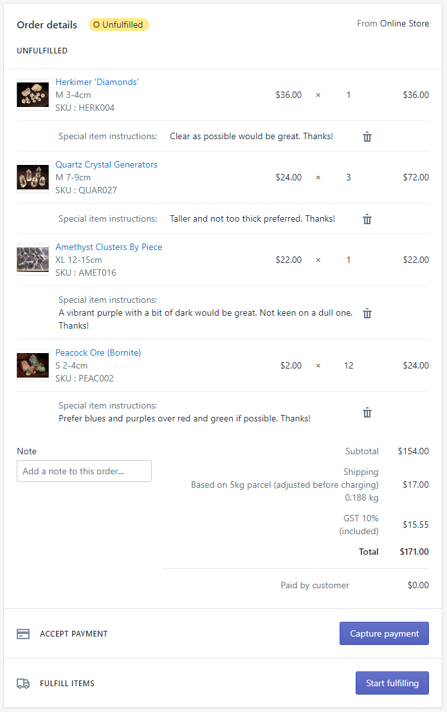<figcaption class="figure-caption text-center">Oh, the beautiful structure and ease of use of Shopify as opposed to a handwritten note!!</figcaption></figure></div></div></section></div></div><div class="bgdark"><div class="container"><section><div class="row vertcentre"><div class="col-md-6"><h2 class="anchor" id="IA">Information Architecture</h2><p class="font-italic">How ~1,500 items were organised</p><p>It all started with an Excel spreadsheet, about 10 pages long. Granted, the client had the main headers, a tag like 'best seller', and the different sizes worked out, but that was about all. </p><p>The challenge was to make 1,500 items easy to sift through, without too many layers of hierarchy that would actually make it more complex.</p></div><div class="col-md-6"><figure>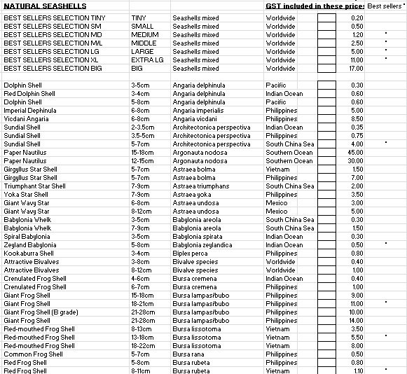<figcaption class="figure-caption text-center">The original spreadsheet</figcaption></figure></div></div></section><div class="row justify-content-center"><div class="col-md-10 col-xl-8"><h4>Inventory</h4><p>My first step was to take stock of what we had. The owner wanted to do the categorisation himself, to cut down on costs and as well because he was the industry expert.</p><p>I guided him on the number of first-level categories he should have, and he went away and tidied up the spreadsheet. Old items had to be deleted, and new ones added, too.</p><p>We eventually agreed on 5 top-level categories: </p><ul> <li>Minerals, Crystals & Gemstones</li><li>Seashells</li><li>Sealife</li><li>Fossils</li><li>Bugs</li></ul><p>This also involved <strong>naming conventions</strong>. For example, sealife was 'marine life', but it seemed more user friendly to go with 'sealife'. 'Rocks' could have featured instead of a long 'Minerals, Crystals & Gemstones', but it wasn't descriptive enough. </p><p>A subcategory we worked out later couldn't have been 'Modified', it had to be 'Painted, Carved & Polished', because those were the terms used in the industry. </p><p>These naming conventions were important because there were several different areas that had to be consistent in order to not introduce confusion. These were the products pages, breadcrumbs, main navigation menu, filters, categories, tags, and probably other references. </p><h4>Sitemap</h4><p>I worked out a sitemap from this, with discussion with the industry expert, the client.</p><figure>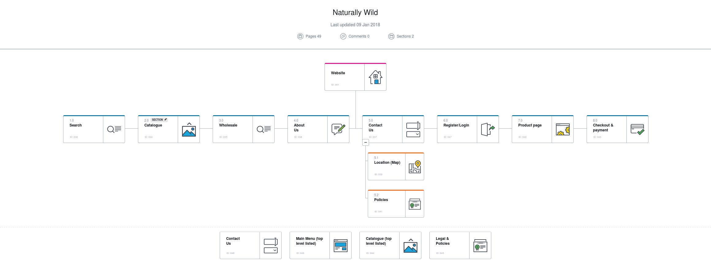<figcaption class="figure-caption text-center">The top level sitemap (catalogue is another section)</figcaption></figure><p>And the catalogue:</p><figure>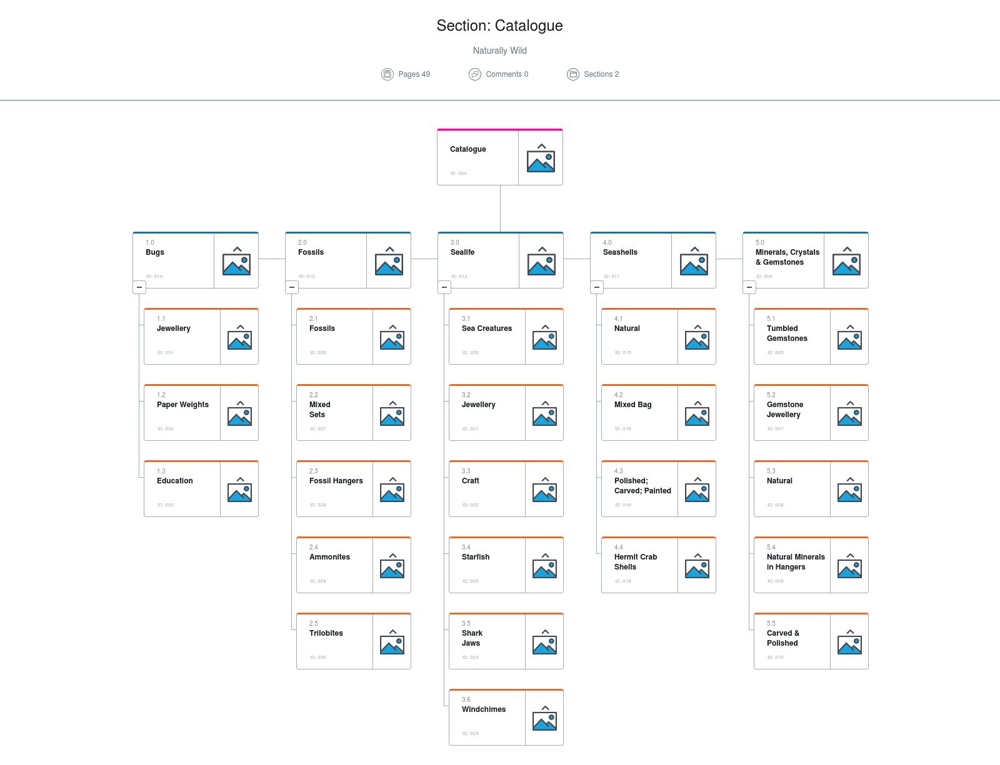<figcaption class="figure-caption text-center">The 'catalogue', showing product hierarchy</figcaption></figure><p>We could have separated minerals, crystals and gemstones into separate subcategories. But that would have created a large number of subcategories that may have been too close in concept. When items are too close, confusion arise as to where the item might be. </p><p>There were very few items in this category and I wanted to put them into another. Some of the 'sealife' were bones, but not fossils - like shark jaws. They look similar, but are definitely another category. And starfish aren't really 'shells', or 'bugs'. </p><p>So what I did was made the second level hierarchy almost as prominent as the first level. </p><p>At the navigation level this was achieved through a 'mega 'menu'. This allowed the full breadthe of the major categories to be shown straight away. </p><figure>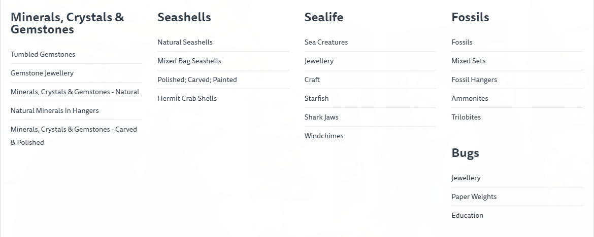<figcaption class="figure-caption text-center">The mega menu, available via the top navigation</figcaption></figure><p>On the 5 home page sections, I made the subcategories more prominent by giving them more contrast. </p><p>When you click on a subcategory, it filters the items straight away (no refresh of the page). This way, customers can quickly flick through dozens of products and get a feel for what's available, just like in the store.</p><figure>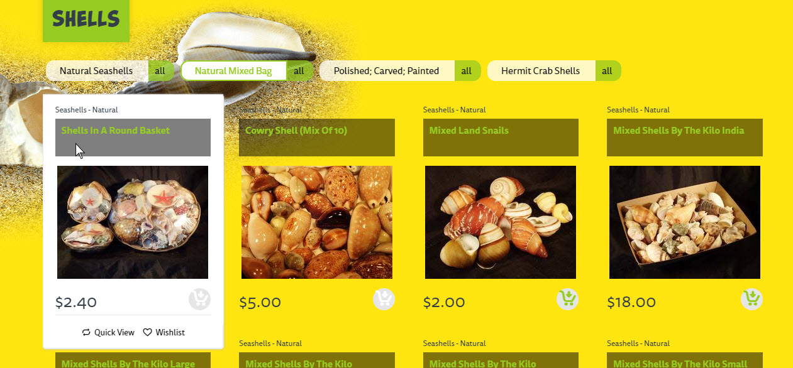<figcaption class="figure-caption text-center">Subcategories and items on the home page for 'Shells'</figcaption></figure><h5>Limitations of Shopify</h5><p>One frustration I had to work through was with a serious limitation of Shopify. It only allows a product to be in one category, and subcategorisation only occurs on the navigation. So the breadcrumbs were rather flat, for example, and on a category page, further filtering can easily be confusing.</p><p>This meant I had to combine 1st and 2nd level categories in some places. I.e. 'Natural' couldn't work, it had to be 'Minerals, Crystals & Gemstones - Natural'. 'Australia' couldn't work as a tag, it had to be 'Origin - Australia'. My 'origin' tags would have worked better as a separate category. </p><p>They'd be on a much better course if they had:</p><ol><li>Products that could be in multiple categories (folders), each with as many subcategories as necessary</li><li>Products could continue to have unlimited tags</li><li>Breadcrumbs that were 'Scotch Egg' in style, where each 'crumb' is also a drop-down showing the other categories on that level</li><li>Navigation that didn't rely on a time-consuming workaround to build the levels, instead being able to go off the categories to a certain level</li></ol><p>Nevertheless, the system is overall incredibly easy to use for users, administrators, and developers/designers.</p><h4>Categorisation (aka Taxonomy)</h4><p>The products were only sorted into single categories, and some had literally hundreds of items. Only part of it would be fixed by grouping the different colours and sizes into the 'one' product. </p><p>So, the process of sub-categorisation began. </p><p>But what I discovered was that having lots of items in a group wasn't necessarily difficult to sift through. The classic 'toothpaste aisle dilemma', where customers are paralysed at the 50+ options of toothpaste facing them, was NOT what I experienced here. (Also known as 'analysis paralysis'.)</p><p>This was because there were not multiple different types of one product. Sure, there were different sizes, and colours for some, but if you know the reason for getting it, there's actually only a very limited number of options (and often, just one option).</p><p>Instead, once a person is interested in 'gemstones', they'll then choose based on:</p><ul><li>looks, particularly if they're a child</li><li>origin, particularly if they're a collector</li><li>size, particularly if they're a craftsperson</li><li>what sells best, particularly if they're a store owner</li><li>(or a particular scientific name, in which case they'll just use the search feature)</li></ul><p>Therefore, once a category had been chosen, I made the category page sorted by best selling, and suitable for quick visual scanning. </p><p>On the left, you could filter by other categories. This is where the origin subcategory (actually 'tag') went, as well as anything else that was a distinct category such as mixed bags, or those on hangers (necklaces). </p><figure>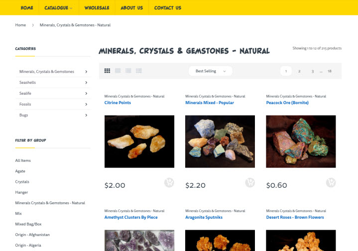<figcaption class="figure-caption text-center">A category page, default sort to best selling, filters on the left, and other features</figcaption></figure><p>Size and specific colours would be chosen on the individual product pages.</p><p>We were left with quirks like 215 products in the 'Minerals, Crystals & Gemstones - Natural' category. While we could have further categorise into names like 'Pyrite' and 'Quartz', the people who know those names are going to use the search function. Or the wholesale order section which allows for quick searching by name or SKU. </p><p>As a precaution and to continually learn, I've setup up monitoring so we can go back and see if improvements can be made, if people report back that they are having trouble. </p><h4>Data integrity and spreadsheet shenanigans</h4><p>Throughout this process, I was building the spreadsheet in readiness to upload to Shopify. </p><p>This involved lots of data manipulations and complex formulas for over 1,500 lines. </p><p>Sizes were mixed with the names so I had to split them at the appropriate place.</p><p>Sizes were not consistent, so I had to use find and replace to change 'SM' into 'S'; '' into inches, and so on, for many variations. This is about easing the naming conventions.</p><p>Some products had variations based on size, but others on colour, and some had no variations, so the final formula had to have multiple nested conditional statements:</p><figure>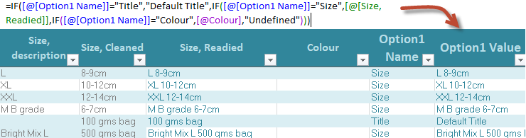<figcaption class="figure-caption text-center">The Excel formula for constructing the size or colour, e.g. 'XL 12-15cm'</figcaption></figure><p>I constructed SKUs (unique identification numbers) for each item, based on the first 4 letters of the item, and a sequential number (all formularised).</p><figure>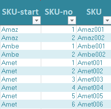<figcaption class="figure-caption text-center">The proces of getting the SKU</figcaption></figure><p>I constructed the 'handle' (slug) from the cleaned item name, using substitutions and the LOWER() function to make it lower case. This cleaned all the illegal characters, while still giving me freedom to fix the names later on. </p><figure>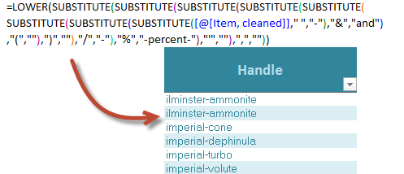<figcaption class="figure-caption text-center">The formula for dynamically constructing the handle/slug</figcaption></figure><p>I constructed the product information from several other fields, adding in HTML (Excel's 'Concatenate' function, plus conditionals). (Not shown.)</p><p>For the important (SEO meta tag) title field, I combined the name of the product with the category and subcategories. But this had a limit on the number of characters, so I had to substitute certain phrases for abbreviations, and make a limit on the number of characters (42) of the product name. </p><figure><figcaption class="figure-caption text-center">The formula for dynamically constructing the meta &lt;title&gt; tag</figcaption></figure><p>Tags had to be comma separated in ONE column. This involved checking to see whether an item had a tag first (if tag column > 0, then x, otherwise do nothing: "")</p><figure>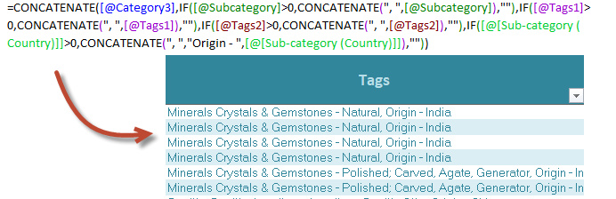<figcaption class="figure-caption text-center">The formula for dynamically constructing the (Shopify) tags column</figcaption></figure><p>All this careful preparation took place in order to provide the best possible data from a limited time and regularly updated set of initial data (being cleaned, and having information added). </p><p>This was also done to provide as much data as possible for search engines. </p><p>The results, I should highlight again were that people are searching for his products and finding them in prime positions on Google/Bing. </p><h4>Future testing: validation of navigation</h4><p>I'm interested in doing a <strong>reverse card sort (aka tree testing)</strong> to test how well the categorisation is performing. </p><p>This is where you start with the categories and ask users to sort items into the categories. I would envision using cards with product names or simply pictures, as if you remember seeing something but can't quite place it.  </p><p>The value of this would be to validate the structure of the categories. However, given the site is actually done, it would be more valuable to test this <em>on the site itself</em>, and see if, from pictures or a vague idea of an item, the user can find it. The response would be videoed or watched.</p></div></div></div></div><div class="bglight"><div class="container"><section><div class="row vertcentre"><div class="col-md-6"><h2 class="anchor" id="UX">User Experience</h2><p class="font-italic">Catering to different users' expectations and needs</p><p> </p></div><div class="col-md-6"><figure><figcaption class="figure-caption text-center"></figcaption></figure></div></div></section><div class="row justify-content-center"><div class="col-md-10 col-xl-8"><h4>The customers & user research</h4><p>The owner/client had been in the business for many years. He was greatly knowledgeable about everything from sales to the products, and how everything worked. </p><p><strong>User Research</strong></p><p>Here are the methods I used to understand the situation better:</p><ul><li>Discussion with the client and sales staff </li><li>Meetings in the store, standing out of the way (watching) when customers needed to be attended to</li><li>Visiting one of his shows he frequents, and experiencing one type of customer's full journey for myself</li><li>Collection of data from customer reviews online</li></ul><p>I drew up a mindmap of my findings, detailing the different types of customers that bought from him. Showing 2 of the 6 types.</p><p><em>Click the image to show in full</em></p><figure><a href="images/natwild/users-mindmap.png" alt="A mindmap for collectors and kids">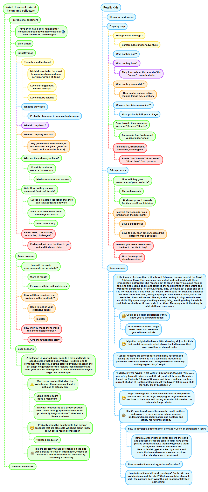</a><figcaption class="figure-caption text-center">User emapthy maps and user scenarios</figcaption></figure><p>Displayed differently, it could easily have been transformed into a full customer journey map. </p><p>Now, the client wanted the focus to be on wholesale customers.</p><p>This pushed the retail customers like kids, amateur collectors, craftspeople, and hobbyists to the background. We could do more work on them in a couple of years.</p><p>In hindsight, I should have been more proactive in then investigating life from a wholesaler's perspective. However, the wholesalers are buying the items for retailers, so understanding this was still quite helpful. For example, I saw how necessary it was to show to wholesalers 'this sells the best'. I subsequently configured the site to show any group of item, by default, by 'best selling'. </p><h4>Flow charts</h4><h5>New wholesale customers</h5><p>I had to think about new wholesale customers - how were we to 'onboard' them?</p><p>One of the client's main strengths was in sales, partly because he had so many great stories of where all the rocks came from. (Anyone who can make what is essentially just a bit of dirt sound cool needs airtime!)</p><p>One option was to allow wholesale customers to add items to their cart, and even order, after which Naturally Wild would get onto them. One problem was that the prices were retail&mdash;twice the wholesale!&mdash;so they might have baulked before they started.</p><p>The solution we went with involved highlighting 'wholesale' through the main navigation. This didn't instruct them on the process immediately, though. We led with the carrot first: "Wholesale customers can receive a 50% discount off RRP". Then because there were very few new wholesale customers, and a form would have lost the opportunity to connect and build rapport, we instructed them to phone. </p><p><strong>User flow diagramming</strong></p><p>I mapped this process out using Timblee. This user would typically find themselves on the site from a Google search, so that is where it began. </p><p><em>Click on the image to open it in full</em></p><figure><a href="images/natwild/userflow-newcustomer.png" alt="User flow diagram from a search">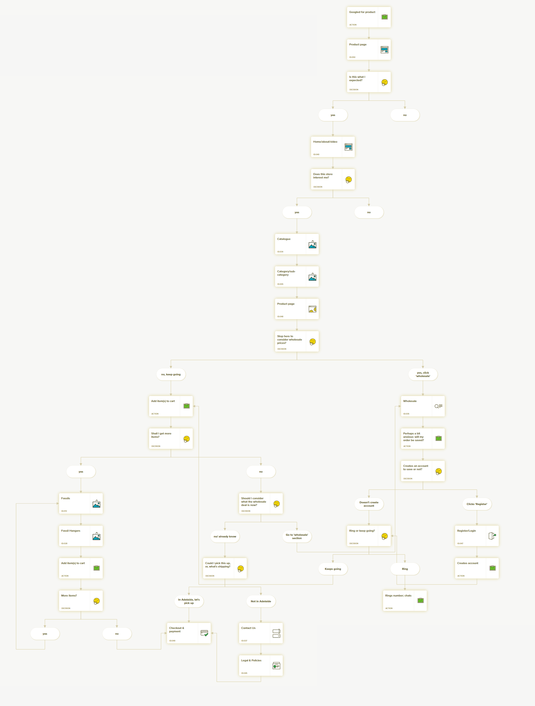</a><figcaption class="figure-caption text-center">New wholesale customer flow through the site</figcaption></figure><p>One thing I learned from the flow diagram was that there are always varying ways people come into and move through your site.  </p><p>If a new wholesale customer didn't see the 'wholesale' button, we could have added in more messages, but decided against it. They would probably call if they were interested, or if they ordered, the discount could be applied after that point.</p><h5>Current wholesale customers</h5><p>I had thought current customers would also be drawn to the 'wholesale' page.</p><p>This was fine because the instructions for newcomers was a single line, and it reminded current customers of the value they were getting. </p><p>The reason current wholesale customers would want this page was for a quick item lookup. They already know the items they want: there's no need to research them.</p><p>The form uses AngularJS (although, I did not write it) and cuts out the research time when certain customers don't need to research anymore. </p><p>I said 'had thought' they'd do this. That was before I did a full user flow diagram. </p><p><em>Click the image to open in full</em></p><figure><a href="images/natwild/userflow-currentcustomers.png" alt="A user flow diagram showing the complex decisions and pathways a current customer might make on ordering again">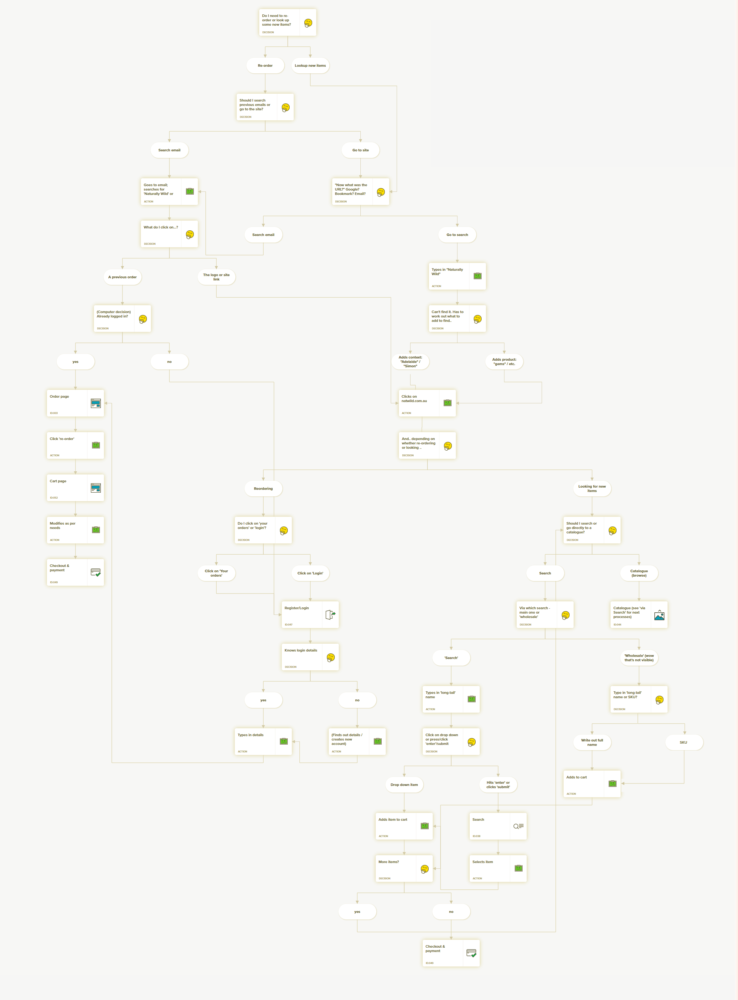</a><figcaption class="figure-caption text-center">The user flow diagram for a current customer, wanting to order again</figcaption></figure><p>What I saw was that it was highly likely for customers to go back to an email, particularly if it was that order they wanted again. Alternatively, they'd use the search or catalogue. </p><p>Customers would hardly think to click on 'Wholesale' to search for a product. The search bar and navigation are not <em>that</em> difficult to find!</p><p>But the wholesale form would be much quicker for them, so I added in a little message under the search bar.</p><p>This would only appear when you're logged in, to avoid clutter and wasting retailers' time. All wholesalers have an account, but very few retailers would. </p><figure><figcaption class="figure-caption text-center">The link under the search goes to the Angular bulk order form</figcaption></figure><p>I think if I had more time, I'd do a little onboarding journey with Intro.js or similar tour feature.</p><p><em>What else did the flow diagram teach me?</em></p><p>The sheer length of the process, particularly if you forgot your password (wholesale customers aren't doing this every day&mdash;it's maybe every 3-6 months)! </p><p>If it were technically possible, I'd do what Medium does and email people each time they want to login, particularly as some people might store their credit card on the system. That seems easier for a rare process, and much more secure (the password would not be easy to hack and/or re-used).</p></div></div></div></div><div class="bgdark"><div class="container"><section><div class="row vertcentre"><div class="col-md-6"><h2 class="anchor" id="UI">User Interface</h2><p class="font-italic">Recreating the in-store wonder</p><p>The first thing that hits you when you walk into Simon's shop is the sheer wonder of hundreds of beautiful shells, fossils, gems, and rocks. They surround you. </p><p>Children's eyes widen in amazement. I think adults almost turn into children again, too, with the fascination of it all!</p><p>So: lots of photos, a video, what do you do?</p></div><div class="col-md-6"><figure>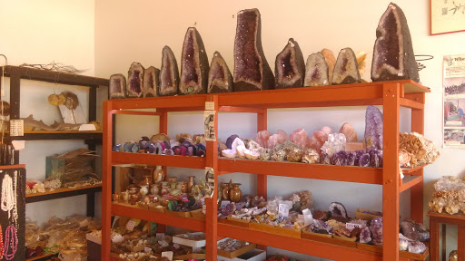<figcaption class="figure-caption text-center">Just one of a number of shelves chock-full of amazing crystals, rocks and more!</figcaption></figure></div></div></section><div class="row justify-content-center"><div class="col-md-10 col-xl-8"><h4>How to fall in love?</h4><p>In order to re-create the wonder of the store experience on the web, I needed to provide an equally vast and yet intricate visual display on the home page.</p><p>The starting home page (<a href="https://themeforest.net/item/electro-gadgets-digital-responsive-shopify-theme/16544295?s_rank=15">Electro Shopify Theme</a>) was a bit of a mess, I thought. It's sections weren't clearly defined, and there was no obvious categorisation. There were headphones next to computers, and cameras next to screens. </p><p>I ended up modifying the template - a config file written in JSON and the template files in liquid - to have the 5 top level categories showing with the same gallery view (repeated), gutting everything else.</p><figure>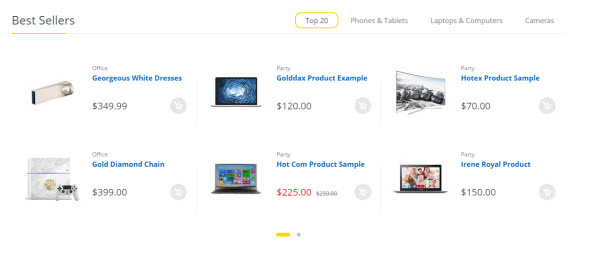<figcaption class="figure-caption text-center">The base gallery section that I modified and repeated, which uses the Owl Carousel jQuery plugin</figcaption></figure><p>I started with an idea to put the sections in order from grass to beach, then ocean and rocks, as if you are looking at a real beach. This may have supported customers' mental model to help them discover where the logical place for the categories were. </p><p>However, the owner wanted to promote the bigger selling items first, so I just went with a standalone background picture for each section. </p><p>In the end, this is what I came up with:</p><figure>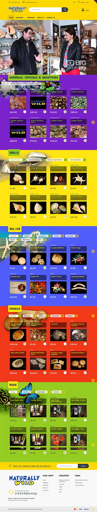<figcaption class="figure-caption text-center">The final home page design</figcaption></figure><h4>Video</h4><p>Of course, an easy way re-create the experience is to actually show it via a video. </p><p>We didn't have the resources to do it ourselves, but "Big Review" did a smart video for Naturally Wild a couple of years back, and so we used that. </p><p>I've used a div as a wrapper to make the video responsive. <code>&lt;div class="video-slide"&gt;&ltiframe ...&gt;</code>.</p><p>Please view the implementation live at <a href="https://natwild.com.au/">www.natwild.com.au</a></p></div></div></div></div><nav class="navbar navbar-expand navbar-dark fixed-bottom bg-dark" id="navbot"><ul class="navbar-nav"><li class="nav-item"><a class="nav-link" href="#top">Top</a></li><li class="nav-item"><a class="nav-link" href="#Biz">Goals</a></li><li class="nav-item"><a class="nav-link" href="#IA">IA</a></li><li class="nav-item"><a class="nav-link" href="#UX">UX</a></li><li class="nav-item"><a class="nav-link" href="#UI">UI</a></li></ul></nav><nav class="navbar navbar-expand navbar-dark fixed-top bg-dark" id="navtop"><button class="navbar-toggler" type="button" data-toggle="collapse" data-target="#navbarCollapse" aria-controls="navbarCollapse" aria-expanded="false" aria-label="Toggle navigation"><span class="navbar-toggler-icon"></span></button><div class="collapse navbar-collapse" id="navbarCollapse"><ul class="navbar-nav mr-auto"><li class="nav-item"><a class="nav-link" href="/">Home</a></li><li class="nav-item dropdown"><a class="nav-link dropdown-toggle" href="#" id="dropup2" data-toggle="dropdown" aria-haspopup="true" aria-expanded="false">Portfolio</a><div class="dropdown-menu" aria-labelledby="dropup2"><a class="dropdown-item" href="/portfolio-RedCupCafe2017.html">Red Cup Cafe 2017</a><a class="dropdown-item" href="/portfolio-NatWild2017.html">Naturally Wild 2017</a><a class="dropdown-item" href="/portfolio-InformationArchitecture.html">Information Architecture</a><a class="dropdown-item" href="/portfolio-Marketing.html">EDM + Marketing</a><a class="dropdown-item" href="/portfolio-2018.html">Agile + Portfolio 2018</a></div></li><li class="nav-item"><a class="nav-link" href="/work-experience.html">Work XP</a></li></ul><span class="badge badge-warning">Beta</span></div></nav><footer class="bg-info text-white"><div class="container"><div class="jumbotron"><div class="row"><div class="col-sm-6"><ul class="nav flex-column"><h4>UI</h4><li class="nav-item"><a class="nav-link" href="/portfolio-RedCupCafe2017.html#Proto">Red Cup Cafe's UI</a></li><li class="nav-item"><a class="nav-link" href="/portfolio-NatWild2017.html#UI">Naturally Wild's UI</a></li><li class="nav-item"><a class="nav-link" href="https://github.com/nathankeenmelb/nk-portfolio">This portfolio's UI (Github)</a></li><li class="nav-item"><a class="nav-link" href="https://codepen.io/nathankeenmelb">JavaScript (Codepen)</a></li><li class="nav-item"><a class="nav-link" href="/portfolio-Marketing.html#design">Email design</a></li><h4>UX</h4><li class="nav-item"><a class="nav-link" href="/portfolio-RedCupCafe2017.html#UX">Red Cup Cafe's UX</a></li><li class="nav-item"><a class="nav-link" href="/portfolio-NatWild2017.html#UX">Naturally Wild's UX</a></li><li class="nav-item"><a class="nav-link" href="https://medium.com/@agapemedia/a-new-angle-to-ux-creating-peaceful-experiences-6d7ec8d286ff">A new angle to UX: creating peaceful experiences (Medium)</a></li><li class="nav-item"><a class="nav-link" href="https://medium.com/@agapemedia/how-to-create-a-peaceful-user-experience-f51ec0090240">How to create a peaceful User Experience (Medium)</a></li><h4>IA</h4><li class="nav-item"><a class="nav-link" href="/portfolio-NatWild2017.html#IA">Naturally Wild's IA</a></li><li class="nav-item"><a class="nav-link" href="/portfolio-InformationArchitecture.html">Email, Evernote, &amp; my 6th sense</a></li></ul></div><div class="col-sm-6"><h4>Contact Nathan</h4><p>Phone: <a href="tel:+61405990801">0405 990 801</a></p><p>Email: <a href="javascript:location='mailto:\u006e\u0061\u0074\u0068\u0061\u006e\u0040\u0061\u0067\u0061\u0070\u0065\u006d\u0065\u0064\u0069\u0061\u002e\u0063\u006f\u006e\u0073\u0075\u006c\u0074\u0069\u006e\u0067';void 0"><script type="text/javascript">document.write('\u006e\u0061\u0074\u0068\u0061\u006e\u0040\u0061\u0067\u0061\u0070\u0065\u006d\u0065\u0064\u0069\u0061\u002e\u0063\u006f\u006e\u0073\u0075\u006c\u0074\u0069\u006e\u0067')</script></a></p><p>LinkedIn: <a href="https://www.linkedin.com/in/nathankeenmelbourne/">linkedin.com/in/nathankeenmelbourne/</a></p></div></div></div></div></footer><script src="https://ajax.googleapis.com/ajax/libs/jquery/3.2.1/jquery.min.js"></script><script src="https://cdnjs.cloudflare.com/ajax/libs/popper.js/1.12.9/umd/popper.min.js" integrity="sha384-ApNbgh9B+Y1QKtv3Rn7W3mgPxhU9K/ScQsAP7hUibX39j7fakFPskvXusvfa0b4Q" crossorigin="anonymous"></script><script src="https://maxcdn.bootstrapcdn.com/bootstrap/4.0.0-beta.2/js/bootstrap.min.js" integrity="sha384-alpBpkh1PFOepccYVYDB4do5UnbKysX5WZXm3XxPqe5iKTfUKjNkCk9SaVuEZflJ" crossorigin="anonymous"></script><script src="/js/custom.js"></script></body>